| Lv01_0001 |
|
ごうきゅう |
大声をあげて泣くこと。 |
| Lv01_0002 |
|
のこ |
あとにとどめておく。消さないでそのままにしておく。 |
| Lv01_0003 |
|
けんきゅう |
物事を詳しく調べたり、深く考えたりして、事実や真理などを明らかにすること。 |
| Lv01_0004 |
|
みじか |
端から端までの隔たりが小さい。ある時点までの間隔が小さい。久しくない。 |
| Lv01_0005 |
 |
ようふく |
『<西洋服|せいようふく>』の略称。西洋風の衣服。 |
| Lv01_0006 |
|
かつよう |
物や人の機能、能力を十分に生かして用いること。効果的に利用すること。 |
| Lv01_0007 |
|
た |
食物をかんで、飲みこむ。暮らしを立てる。生活する。 |
| Lv01_0008 |
|
かようび |
週の第三日。月曜の次の日。 |
| Lv01_0009 |
|
にゅうよく |
身体の清潔、病気の治療を目的として大気以外のものに身体を浸すこと。 |
| Lv01_0010 |
|
すこ |
病気をせず、丈夫なこと。 |
| Lv01_0011 |
|
きぬいと |
カイコの繭から採れる動物繊維で造った糸。 |
| Lv01_0012 |
|
とちぎ |
日本の関東地方に位置する県。県庁所在地は宇都宮市。 |
| Lv01_0013 |
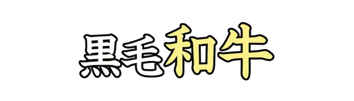 |
あなぐま |
イタチ科アナグマ属に分類される食肉類。 |
| Lv01_0014 |
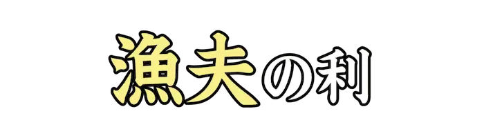 |
ぎょふ |
両者が争っている間に、第三者が介入し苦をせずに利益を得ること。 |
| Lv01_0015 |
|
こざかな |
小さい魚。また、ざこ。 |
| Lv01_0016 |
|
きんく |
和歌や俳諧などで趣をこわす、または約束としてきらって使わない言葉。 |
| Lv01_0017 |
|
ほとけ |
悟りを得た者。<仏陀|ぶっだ>。また、仏像や死者を指す。 |
| Lv01_0018 |
|
どくそうせい |
独自の考えで物事をつくり出す能力。また、新しい物事がもつそのような性質。 |
| Lv01_0019 |
|
しんかん |
近年では、同人誌即売会に向けて発行した同人誌を指す場合もある。 |
| Lv01_0020 |
|
ねんりょう |
化学反応、原子核反応を起こすことで、エネルギーを発生させるもの。 |
| Lv01_0021 |
|
おきなわ |
日本の九州地方に位置する県。県庁所在地は那覇市。 |
| Lv01_0022 |
|
いばらき |
日本の関東地方に位置する県。県庁所在地は水戸市。 |
| Lv01_0023 |
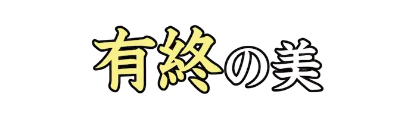 |
ゆうしゅう |
事を全うし、立派な成果に仕上げること。 |
| Lv01_0024 |
|
はくしごう |
大学院で、博士課程や博士後期課程を修了した人が得られる学位。 |
| Lv01_0025 |
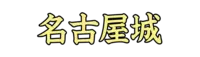 |
なごやじょう |
愛知県名古屋市にある日本の城。 |
| Lv01_0026 |
|
れんしゅう |
学問や技芸などを、くり返して習うこと。 |
| Lv01_0027 |
|
さつ、ふだ |
紙幣。また、神社や寺院で頒布する護符の一種。 |
| Lv01_0028 |
|
いしんでんしん |
心の内が言わずとも伝わり合っていること。 |
| Lv01_0029 |
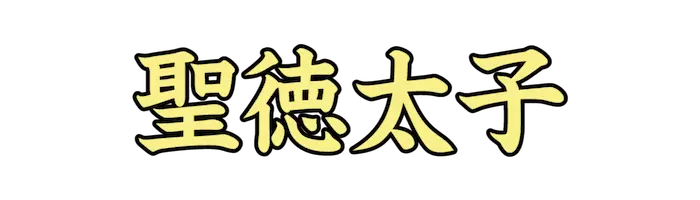 |
しょうとくたいし |
飛鳥時代の政治家、皇太子。冠位十二階や十七条憲法を制定した。 |
| Lv01_0030 |
|
いんど |
南アジアに位置する連邦共和制国家。首都はニューデリー。 |
| Lv01_0031 |
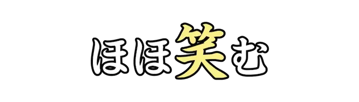 |
え |
にこにこする。笑い顔になる。また、花が咲きはじめる。 |
| Lv01_0032 |
|
いしゃ |
病人の診察、治療を職業とする人。医師。 |
| Lv01_0033 |
|
ふかのう |
可能でないこと。絶対に起こるはずのないこと。 |
| Lv01_0034 |
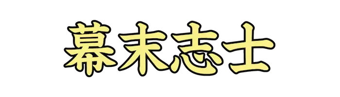 |
ばくまつしし |
江戸時代末期に活躍した志士の総称。 |
| Lv01_0035 |
|
しゅくふく |
幸福を喜び祝うこと。また、幸福を祈ること。 |
| Lv01_0036 |
|
まじ |
互いに他方に入り込んだ位置関係となる。 |
| Lv01_0037 |
|
ひかり |
千葉県<匝瑳|そうさ>郡に存在していた町。今は<横芝町|よこしばまち>と合併し<横芝光町|よこしばひかりまち>になっている。 |
| Lv01_0038 |
|
あきたけん、あきたいぬ |
秋田県が原産の日本犬の一種。国の天然記念物に指定されている。 |
| Lv01_0039 |
|
めぐろ |
東京都の区部南西部に位置する特別区。 |
| Lv01_0040 |
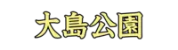 |
おおしまこうえん |
伊豆大島に設置されている公園。『都立大島公園』とも。 |
| Lv01_0041 |
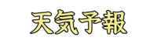 |
てんきよほう |
ある地域の天気の変化を予測し、知らせること。 |
| Lv01_0042 |
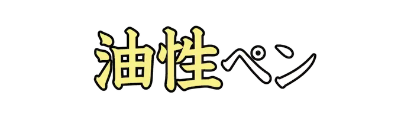 |
ゆせい |
染料に溶剤を溶かしたペンの総称。 |
| Lv01_0043 |
|
ひりょう |
植物を生育させるための栄養分として、人為的に施すもの。 |
| Lv01_0044 |
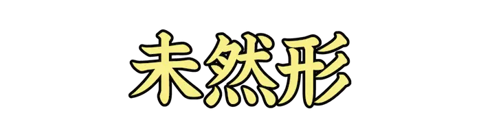 |
みぜんけい |
日本語の用言の活用形の一つ。『言わない』の『言わ-』など。 |
| Lv01_0045 |
|
めじるし |
見つけたり覚えたりするたよりとなるもの。 |
| Lv01_0046 |
|
まご |
棒の先に指を曲げた手の形のものを付けた、背中をかくための道具。 |
| Lv01_0047 |
|
やぶ |
戦いや競技などで敗北する。 |
| Lv01_0048 |
|
か |
持ち主に返す前提で、他人のものを自分のものとして使う。 |
| Lv01_0049 |
|
こふで |
細字を書くのに用いる細い筆。 |
| Lv01_0050 |
|
まった |
もれたり欠けたりするところがなく。完全に。 |
| Lv01_0051 |
|
くちぶえ |
唇をすぼめたり、指を口に入れたまま強く息を出して笛のような音を出すこと。 |
| Lv01_0052 |
|
しだい |
物事の程度や状態が少しずつ変化する。順々に。 |
| Lv01_0053 |
|
つか |
目上の人のそばに居て、その用をする。 |
| Lv01_0054 |
|
こんご |
今から後。この後。以後。 |
| Lv01_0055 |
|
こうせん |
ふたつの平面が交わってできる直線。 |
| Lv01_0056 |
|
にんぎょう |
わらで作った人形。玩具として使用したり、呪いの道具に使用される。 |
| Lv01_0057 |
|
した |
心に分けへだてがなく、仲がいい。 |
| Lv01_0058 |
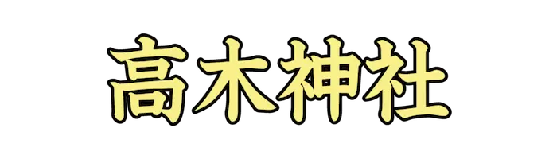 |
たかぎじんじゃ |
東京都<墨田|すみだ>区<押上|おしあげ>二丁目にある神社。 |
| Lv01_0059 |
|
ちゃいろ |
黒味を帯びた赤黄色。 |
| Lv01_0060 |
|
けんざかい、けんきょう |
県と県との境界。都道府県関係なく、どの境も県境という。 |
| Lv01_0061 |
|
こめだわら |
運搬や<貯穀|ちょこく>に用いる<藁製|わらせい>の米を入れる容器。 |
| Lv01_0062 |
|
はんが |
版を使って刷った絵の総称。 |
| Lv01_0063 |
|
せ |
過ちなどを相手の責任として非難する。苦しめる。悩ます。 |
| Lv01_0064 |
|
じょうほう |
ある物事の内容や事情についての知らせ。また、生体系が働くための指令や信号。 |
| Lv01_0065 |
|
こうざん |
有用な金属、鉱物を掘りとる場所や施設。 |
| Lv01_0066 |
|
こた |
働きかけに対して、それに添うような反応を示す。 |
| Lv01_0067 |
|
てあつ |
もてなしや扱いが、行き届いて丁寧である。 |
| Lv01_0068 |
|
しき |
兵士の、戦いに対する意気込み。 |
| Lv01_0069 |
|
こんてい |
土台をなし、よりどころとなっている所。根本土台。 |
| Lv01_0070 |
|
うき |
その地方で、一年のうちで最も雨の降り続く季節のこと。 |
| Lv01_0071 |
|
つく |
手を加えて、もとと違ったものに仕上げる。 |
| Lv01_0072 |
|
せきゆ |
種々の炭化水素の混合物を主成分とする、液状の物質。 |
| Lv01_0073 |
|
うご |
ものの位置が変わる。移動する。他からの影響を受けて、心に変化が生じる。 |
| Lv01_0074 |
|
ながたび |
長途の旅。長期間にわたる旅行。 |
| Lv01_0075 |
|
かかりいん |
官庁や会社で特定の仕事を受け持つ職員。 |
| Lv01_0076 |
|
こおりみず、こおりすい |
飲み水に氷を入れて冷たくしたもの。かき氷。 |
| Lv01_0077 |
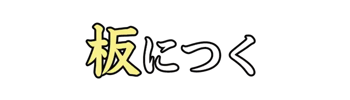 |
いた |
経験や積み重ねの結果、立場や境遇が似合ってくることのたとえ。 |
| Lv01_0078 |
|
よこぎ |
横の方向に通りすぎる。一方の側から他方の側へ渡る。 |
| Lv01_0079 |
|
あたた |
物が冷たすぎず、程よい状態である。思いやりがある。いたわりの心がある。 |
| Lv01_0080 |
|
わかば |
生え出て間のない草木の葉。 |
| Lv01_0081 |
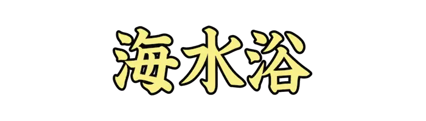 |
かいすいよく |
海に行って泳いで遊んだり、日光浴をしたりすること。 |
| Lv01_0082 |
|
お |
身につける。腰に下げる。ある性質や成分、傾向などを含み持つ。 |
| Lv01_0083 |
|
れんじつ |
<幾日|いくにち>も続くこと。引き続いて毎日。 |
| Lv01_0084 |
|
おぼ |
見聞きした事柄を心にとどめる。記憶する。また、身につける。習得する。 |
| Lv01_0085 |
|
けっせき |
出席すべき会合などに出ないこと。また、生徒や学生が学校を休むこと。 |
| Lv01_0086 |
|
いわ |
めでたい物事を喜ぶ。ことほぐ。 |
| Lv01_0087 |
|
つた |
物に沿って移動する。連続してある物などを手がかりにして進む。 |
| Lv01_0088 |
|
おさ |
政治の秩序が行き渡る。痛みや、症状などがしずまる。 |
| Lv01_0089 |
|
はた |
布や紙などで作り、高く掲げて標識や装飾にするもの。 |
| Lv01_0090 |
|
と |
物事の道理や筋道をよくわかるように話す。 |
| Lv01_0091 |
|
やしな |
自分の収入を中心として、家族などが生活できるようにする。 |
| Lv01_0092 |
|
はなたば |
花を何本か束ねたもの。 |
| Lv01_0093 |
|
お |
棒状や平面状の物が曲がったり切れる。 |
| Lv01_0094 |
|
よろこ |
うれしいと思う。楽しく快い気持ちになる。 |
| Lv01_0095 |
|
しょくちゅうどく |
有毒物質の含まれた飲食物を摂取したことによって起こる中毒の総称。 |
| Lv01_0096 |
|
ぶんどき |
角度を測定するための器具。 |
| Lv01_0097 |
 |
ちょきんばこ |
少額の金銭を入れてためておく容器。 |
| Lv01_0098 |
|
あさ |
表面から底まで、入り口から奥までの距離が短い。深さが少ない。 |
| Lv01_0099 |
|
はんせい |
自分のしてきた言動をかえりみて、その可否を改めて考えること。 |
| Lv01_0100 |
|
じてん |
語の言語としての意味、用法と内容を示す辞書の総称。『<字引|じびき>』とも。 |
| Lv01_0101 |
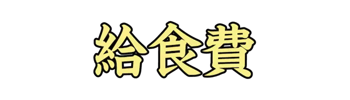 |
きゅうしょくひ |
学校給食にかかる経費のうち、保護者が負担する費用。 |
| Lv01_0102 |
|
だいこうぶつ |
とても好きな食べ物や飲み物。 |
| Lv01_0103 |
|
さんか |
ある目的をもつ集まりに一員として加わり、行動をともにすること。 |
| Lv01_0104 |
|
ぼくじょう |
ウシやウマなどの家畜を飼養する施設。 |
| Lv01_0105 |
|
くろう |
精神的、肉体的に力を尽くし、苦しい思いをすること。 |
| Lv01_0106 |
|
うめ |
バラ科サクラ属の落葉高木。 |
| Lv01_0107 |
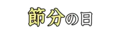 |
せつぶん |
二月三日。一般的に邪気を払い、無病息災を願う行事。 |
| Lv01_0108 |
|
びせいぶつ |
目にみえない程小さな生物の総称。 |
| Lv01_0109 |
|
せたいぬし |
世帯の中心となる者。『所帯主(しょたいぬし)』とも。 |
| Lv01_0110 |
|
ひく |
物が地面などから空間的に近い位置にある。 |
| Lv01_0111 |
 |
りこう |
頭がよいこと。賢いこと。要領よく抜け目のないこと。 |
| Lv01_0112 |
|
びょうき、やまいけ |
生物が機能になんらかの障害を起こし、健康な日常生活を営めない状態。 |
| Lv01_0113 |
|
らっかせい、らっかしょう |
マメ亜科ラッカセイ属の一年草。『ナンキンマメ』『ピーナッツ』とも。 |
| Lv01_0114 |
|
こうざ |
大学院や大学などに置かれる研究、教育のための組織。 |
| Lv01_0115 |
|
せんでん |
商品の効能や主義、主張などに対する理解、賛同を求め広く伝え知らせること。 |
| Lv01_0116 |
|
どくそう |
ひとりで走ること。他を大きく引き離して先頭を走ること。 |
| Lv01_0117 |
|
ほきゅう |
足りなくなった分を補うこと。 |
| Lv01_0118 |
|
りんじ |
あらかじめ定めた時でなく、その時々の事情に応じて行うこと。 |
| Lv01_0119 |
|
とど |
物を持っていき、先方へ渡す。 |
| Lv01_0120 |
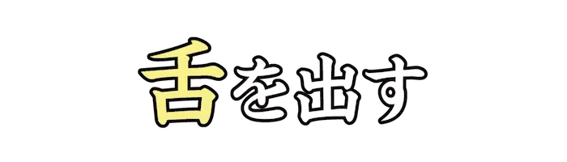 |
した |
陰で人をばかにしたり、嘲り笑ったりする。また、恥ずかしさなどをごまかす動作。 |
| Lv01_0121 |
|
ぼうさい |
台風や地震、火事などの災害を防ぐこと。 |
| Lv01_0122 |
|
べんとうばこ |
弁当を入れて持ち運ぶ器。 |
| Lv01_0123 |
|
でんげん |
電力を供給するみなもと。電気機器を動かす電力を取り入れる所。 |
| Lv01_0124 |
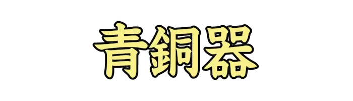 |
せいどうき |
青銅で作った製品。日本では弥生時代に用い始めた。 |
| Lv01_0125 |
|
ほ |
水分や湿気を取り除くために、日光、風、火気などにあてる。かわかす。 |
| Lv01_0126 |
|
こなゆき、こゆき |
水分が少なめの、さらさらとした粉状の雪。 |
| Lv01_0127 |
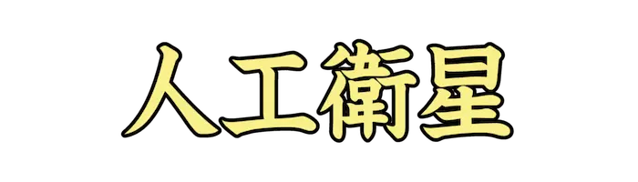 |
じんこうえいせい |
ロケットで打ち上げられ、地球や月など太陽系の惑星の周囲を公転する人工の物体。 |
| Lv01_0128 |
|
かんしゅう |
興行物や催し物などを見物しに集まった、大勢の人々。 |
| Lv01_0129 |
|
しょうぼうし |
制服を着用して消防活動に従事する職員の俗称。消防官。 |
| Lv01_0130 |
 |
せいじつ |
私利私欲をまじえず、真心をもって人や物事に対すること。 |
| Lv01_0131 |
|
じょうび |
いつも用意しておくこと。 |
| Lv01_0132 |
 |
ぞく |
その組織、集団の構成員となる。所属する。また、部下となる。従属する。 |
| Lv01_0133 |
|
きも |
物事に接した時、心にいだく感情や考え方。 |
| Lv01_0134 |
|
さんちょう |
山の頂上。 |
| Lv01_0135 |
|
こうしゃ |
学校の建物。 |
| Lv01_0136 |
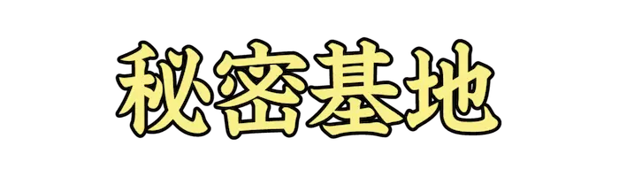 |
ひみつきち |
周囲の人物に発見されないことを目的とした活動拠点を意味する語。 |
| Lv01_0137 |
|
まいすう |
紙や板状のものなどの数。 |
| Lv01_0138 |
|
はんしゃ |
光、音などが向きを変え、もとに戻ること。脊髄までで止まる特定の刺激への反応。 |
| Lv01_0139 |
|
けんり |
ある物事を自分の意志で自由に行ったり、他人に要求することのできる資格、能力。 |
| Lv01_0140 |
 |
えだわ |
幹または枝から小枝が分かれ出ること。また、いくつかの物が派生すること。 |
| Lv01_0141 |
|
はら |
怒らずにはいられない。しゃくに障る。 |
| Lv01_0142 |
|
くら |
二つ以上のものをつき合わせて差異や優劣などを調べる。比較する。 |
| Lv01_0143 |
|
うんが |
給排水や船舶の航行などのために、陸地を掘り開いてつくった人工の水路。 |
| Lv01_0144 |
|
ひけつ |
提出議案の不賛成、不承認を議決すること。 |
| Lv01_0145 |
|
おんど |
人の先に立って、物事をすること。また、多人数が歌につれて踊ること。 |
| Lv01_0146 |
|
がいろじゅ |
街路に沿って並べて植えてある樹木。 |
| Lv01_0147 |
|
とうごう |
二つ以上のものを合わせて一つにすること。 |
| Lv01_0148 |
|
どくは |
難解な書物や大部の書物を終わりまで読み通すこと。 |
| Lv01_0149 |
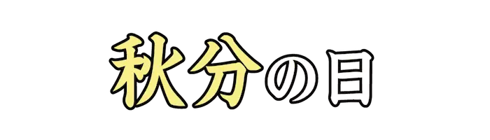 |
しゅうぶん |
日本の国民の祝日のひとつ。秋分がはじまる九月二十三日を指す。 |
| Lv01_0150 |
|
いとな |
忙しく物事をする。怠ることなく励む。 |
| Lv01_0151 |
|
わた |
白ざらめを加熱して溶かし、糸状になったものを棒に巻き付けた綿状の砂糖菓子。 |
| Lv01_0152 |
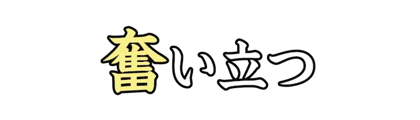 |
ふる |
何事かを行うために心を奮うこと。発奮すること。 |
| Lv01_0153 |
|
たんとう |
一定の事柄を受け持つこと。 |
| Lv01_0154 |
|
しきしゃ |
指揮をする人。指図する人。合奏や合唱を指揮する人。コンダクター。 |
| Lv01_0155 |
|
とりひき |
物品の売買、または、それに伴う金品の受け渡しを行なうこと。 |
| Lv01_0156 |
|
い |
矢を弓につがえて放つ。 |
| Lv01_0157 |
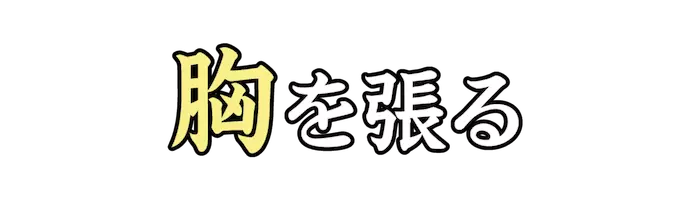 |
むね |
胸をそらせて、自信のある様子をする。得意になる。 |
| Lv01_0158 |
|
はいいろ、かいしょく |
灰のような、白と黒との中間の色。ねずみ色。グレー。 |
| Lv01_0159 |
|
いっしんふらん |
心を一つの事に集中して、他の事に気をとられないこと。 |
| Lv01_0160 |
|
ていしょく |
食堂や料理店などで、あらかじめいくつかの料理の組み合わせを決めてある献立。 |
| Lv01_0161 |
|
わか |
生まれてから多くの年数を経ていない。また、世慣れていない。数が少ない。 |
| Lv01_0162 |
|
てあら |
手を洗うこと。また、それに用いる水や器。また、便所やお手洗い。 |
| Lv01_0163 |
|
か |
食べ物を与えて動物を養い育てる。 |
| Lv01_0164 |
|
と |
あいていたものや部分をふさいでしまう。今まで続いたものを終わりにする。 |
| Lv01_0165 |
|
す |
不用のものとして、手元から放す。持ち続けてきた思いなどをなくす。 |
| Lv01_0166 |
|
はげ |
勢いがたいへん強い。 |
| Lv01_0167 |
|
ささ、つか |
倒れたり落ちたりしないように、何かをあてがっておさえる。また、滞る。 |
| Lv01_0168 |
|
ちぢ |
間が詰まったり中身が減ったりして、長さなどが短くなったり縮小したりする。 |
| Lv01_0169 |
|
はなぢ |
鼻からの出血。 |
| Lv01_0170 |
|
ゆうぐ |
日の暮れるころ。日暮れ。『黄昏(たそがれ)』とも。 |
| Lv01_0171 |
|
ふたた |
同じ動作や状態を繰り返すこと。副詞的にも用いる。 |
| Lv01_0172 |
|
こきざ |
小さく刻むこと。また、ごく短い間隔で動作を行うこと。 |
| Lv01_0173 |
|
なら、な |
列などをつくって位置する。また、隣り合う。つらなる。 |
| Lv01_0174 |
|
けぞ |
毛を染めること。また、その薬。 |
| Lv01_0175 |
|
す |
ある場所を通り越す。通過する。また、定められた程度、水準をこえている。 |
| Lv01_0176 |
|
あじ |
飲食物を口に入れて、そのうまみを十分に感じとる。玩味する。 |
| Lv01_0177 |
|
けいとう |
一定の順序を追って続いている、統一のあるつながり。 |
| Lv01_0178 |
|
ふっきゅう |
壊れたり、傷んだりしたものを、もとの状態にすること。 |
| Lv01_0179 |
|
かいせつ |
施設、設備などを新しくもうけること。 |
| Lv01_0180 |
|
たいへん |
程度がはなはだしいこと。 |
| Lv01_0181 |
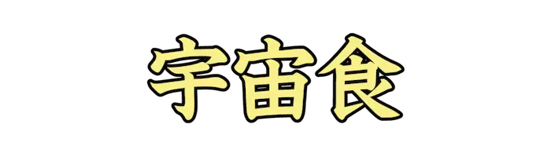 |
うちゅうしょく |
宇宙船などで食事がとれるよう作られた食品。特別な調理を必要としない。 |
| Lv01_0182 |
|
きたく |
自分の家に帰ること。 |
| Lv01_0183 |
|
したが |
後ろについて行く。あとに続く。意のままになる。服従する。 |
| Lv01_0184 |
|
くろしお |
日本列島に沿って太平洋を流れる暖流。日本海流。 |
| Lv01_0185 |
|
まず |
財産や金銭がとぼしく、生活が苦しい。満たされていない。 |
| Lv01_0186 |
 |
かぶ |
木や草を切ったり刈ったりしたあとに残る根もとの部分。 |
| Lv01_0187 |
|
そ |
長く続いているものに、離れないように付き従う。 |
| Lv01_0188 |
|
かいしょう |
今までの状態や関係、約束などが消えてなくなること。 |
| Lv01_0189 |
|
ひょうしき |
目印。目印として設けられたもの。 |
| Lv01_0190 |
|
げんいん |
ある物事や、ある状態、変化を引き起こすもとになること。 |
| Lv01_0191 |
|
かいかく |
従来の制度などを改めてよりよいものにすること。 |
| Lv01_0192 |
|
ゆういぎ |
意義のあること。意味、価値があると考えられること。 |
| Lv01_0193 |
|
せんねん |
一つのことに心を集中すること。そのことだけに熱心になること。 |
| Lv01_0194 |
|
りゃく |
全体のうち一部分をはぶく。略する。 |
| Lv01_0195 |
|
きず |
負傷する。けがをする。 |
| Lv01_0196 |
|
とど |
進行していたものが停止する。立ちどまる。同じ場所にそのままいて動かないでいる。 |
| Lv01_0197 |
|
そうぞう |
実際には経験していない事柄などを推し量ること。 |
| Lv01_0198 |
|
きんし |
ある行為を行わないように命令すること。 |
| Lv01_0199 |
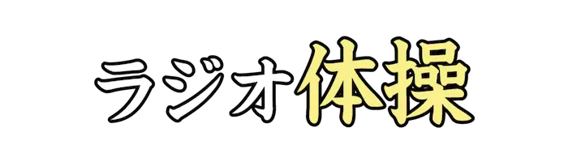 |
たいそう |
昭和三年から放送開始された、ラジオ放送に合わせて行う国民保健体操。 |
| Lv01_0200 |
|
のうし |
脳の機能が回復不可能となった状態のこと。ゲームなどで何も考えずにプレイするさま。 |
| Lv01_0201 |
|
へいまくしき |
催し事を閉幕する意味で開かれる式典。 |
| Lv01_0202 |
|
えん |
人々の前で芝居、演奏などをして見せる。演ずる。 |
| Lv01_0203 |
|
か |
自分の金や物などを、ある期間だけ他人に使わせる。 |
| Lv01_0204 |
|
ことわ |
主に相手の申し出や働きかけを拒絶する際などに用いられる表現。 |
| Lv01_0205 |
|
うたが |
本当かどうか怪しいと思う。不審に思う。 |
| Lv01_0206 |
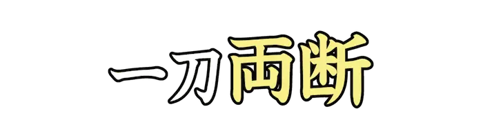 |
りょうだん |
物事をすばやく処理すること。 |
| Lv01_0207 |
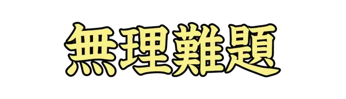 |
むりなんだい |
解決不可能な問題。道理に外れた言いがかり。 |
| Lv01_0208 |
|
えいぎょう |
利益を得る目的で継続的に事業を営むこと。また、その営み。 |
| Lv01_0209 |
|
おうらい |
行ったり来たりすること。行き来。また、人や乗り物が行き来する場所。 |
| Lv01_0210 |
|
つうかい |
たまらなく愉快なこと。胸がすくようで、非常に気持ちがよいこと。 |
| Lv01_0211 |
 |
えいようか |
食品の栄養としての価値。 |
| Lv01_0212 |
|
むしゃ |
武芸に携わることを任務とする人。また、その集団。武士。 |
| Lv01_0213 |
|
ひきょう |
外部の人が足を踏み入れたことがほとんどなく、一般に知られていない地域。 |
| Lv01_0214 |
|
ねが |
望みがかなうようにこい求める。望み求める。 |
| Lv01_0215 |
|
つね |
どんな時でも。いつも。絶えず。 |
| Lv01_0216 |
|
かわら、かわはら |
川の流れに沿う平地で、ふだんは水の流れていない、石や砂の多い所。 |
| Lv01_0217 |
|
にっしょうけん |
建物の日当たりを確保する権利。 |
| Lv01_0218 |
|
げいのうじん |
芸能を職業とする人。 |
| Lv01_0219 |
|
けしき、けいしょく |
観賞の対象としての自然界の眺め。風景。 |
| Lv01_0220 |
|
えいぞう |
光線の屈折または反射によって作られた像。映画やテレビの画面に映し出された画像。 |
| Lv01_0221 |
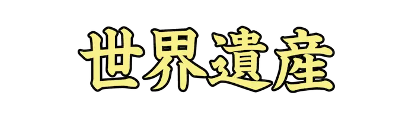 |
せかいいさん |
世界遺産リストに記載された、顕著な普遍的価値をもつ建造物や自然などのこと。 |
| Lv01_0222 |
|
けいそう |
みがるな服装、いでたち。 |
| Lv01_0223 |
|
けいざい |
『経世済民(けいせいさいみん)』。国を治め、民を救済すること。 |
| Lv01_0224 |
|
ひ |
温度が下がってあたたかさが失われる。 |
| Lv01_0225 |
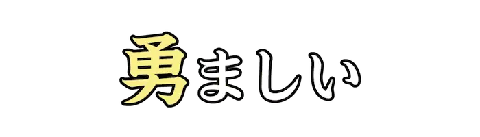 |
いさ |
意気が盛んで勢いがあり、恐れずに危険や困難に向かっていくさま。 |
| Lv01_0226 |
|
わす |
覚えていたことが思い出せなくなる。何かに熱中してうっかり気がつかずにいる。 |
| Lv01_0227 |
|
ひさ |
長い時間がたっている。 |
| Lv01_0228 |
|
へ |
物の数、量を少なくする。減じる。 |
| Lv01_0229 |
|
もっと |
比べてみて程度が他のどれよりもまさることを表す。 |
| Lv01_0230 |
 |
ま |
まっすぐな物などを弓形のようにする。まがった状態にする。 |
| Lv01_0231 |
|
ゆた |
満ち足りて不足のないさま。十分にあるさま。 |
| Lv01_0232 |
 |
ようす |
外から見てわかる物事のありさま。状況。また、態度。そぶり。 |
| Lv01_0233 |
|
みちあんない |
道を知らない人を導いて連れていくこと。また、道の方向や距離などを記した木や石。 |
| Lv01_0234 |
|
たいよう |
地球が属する惑星系の中心に位置する天体。 |
| Lv01_0235 |
|
まね、お |
合図をして人を呼び寄せる。客として来るように誘う。招待する。 |
| Lv01_0236 |
|
よ |
近づく。寄る。また、攻めて近くに迫る。 |
| Lv01_0237 |
|
にゅうりょく |
機械装置や電気回路などに、動力または信号を与えること。 |
| Lv01_0238 |
|
こころ |
実際に効力、効果などをためすために行う。ためしにやってみる。 |
| Lv01_0239 |
|
むらやま |
山形県中央部に位置する市。旧北村山郡および西村山郡の一部。 |
| Lv01_0240 |
|
さかい |
福井県北部に位置する市。福井市に次ぐ福井県内の第二都市。 |
| Lv01_0241 |
|
たけはら |
広島県の南中部に位置する市。古くは瀬戸内の交通の要衝として発展した。 |
| Lv01_0242 |
|
かわぐち |
埼玉県の南東部に位置する市。中核市、保健所政令市に指定されている。 |
| Lv01_0243 |
|
しまだ |
静岡県中部、大井川の両岸に位置する市。江戸時代、東海道の宿場町として盛えた。 |
| Lv01_0244 |
|
たむら |
福島県中通り中部に位置する市。全体の約六割を山林が占める中山間地域。 |
| Lv01_0245 |
|
とうしゅ |
野球やソフトボールで、打者に向かってボールを投げる人。ピッチャー。 |
| Lv01_0246 |
 |
かんまつ |
書物や巻物などの終わりの部分。巻尾。 |
| Lv01_0247 |
|
てんこ |
一人一人の名を呼んで、全員いるかどうか確かめること。 |
| Lv01_0248 |
|
のうりつ |
一定時間内にできる仕事の割合。 |
| Lv01_0249 |
|
ほうそう |
無線、有線などの電気通信技術を用いて、映像、音声などの情報を送信すること。 |
| Lv01_0250 |
|
きゅうぞう |
急にふえること。また、急にふやすこと。 |
| Lv01_0251 |
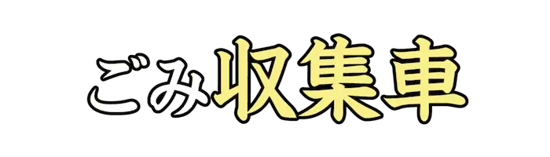 |
しゅうしゅうしゃ |
ごみを収集し処分施設まで運搬する目的に特化した業務用車両。 |
| Lv01_0252 |
|
じつざい |
実際に存在すること。現実にあるもの。 |
| Lv01_0253 |
|
ゆうし |
いさましい姿。 |
| Lv01_0254 |
|
くいき |
くぎられた一定範囲の場所。 |
| Lv01_0255 |
|
しょほう |
物事を処理する方法。処法。てだて。 |
| Lv01_0256 |
|
ちゅうふく |
山の、頂上と麓とのまんなかあたり。山腹。 |
| Lv01_0257 |
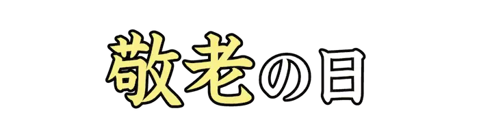 |
けいろう |
国民の祝日のひとつ。多年にわたり社会につくしてきた老人を敬愛し、長寿を祝う日。 |
| Lv01_0258 |
|
ここの |
数の名。八の次、十の前の自然数。また、昔の時刻の呼び名。九つ時。 |
| Lv01_0259 |
|
えんまん |
物事のようすや人柄などが、調和がとれていて穏やかなこと。 |
| Lv01_0260 |
|
おうさま |
王を尊敬、または敬愛していう語。 |
| Lv01_0261 |
 |
したび |
火勢が衰えること。盛んだった物事の勢いが衰えてくること。 |
| Lv01_0262 |
|
にまいがい |
二枚貝綱に分類される軟体動物の総称。 |
| Lv01_0263 |
|
くち |
話を始める。最初に発言する。 |
| Lv01_0264 |
|
ひだりて、さしゅ |
左の方の手。弓を持つほうの手。 |
| Lv01_0265 |
|
こそだ |
子供を育てること。育児。 |
| Lv01_0266 |
|
いととお |
縫い針の穴に糸を通す器具。スレダー。 |
| Lv01_0267 |
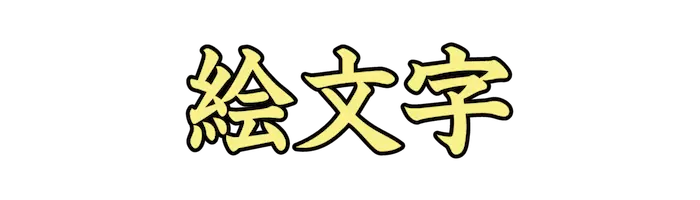 |
えもじ |
記録や意志伝達のため使われる絵画的表現。ピクトグラフ。 |
| Lv01_0268 |
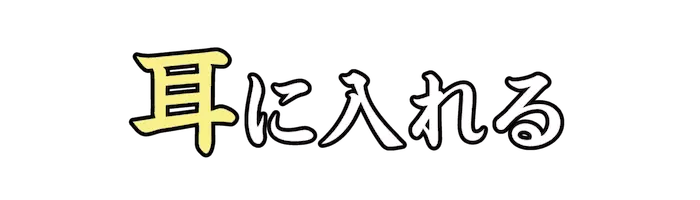 |
みみ |
情報などを知らせる。聞いて知る。小耳にはさむ。 |
| Lv01_0269 |
|
なつやす |
学校、会社などで、夏季に設けられた休暇。『夏期休暇(かききゅうか)』とも。 |
| Lv01_0270 |
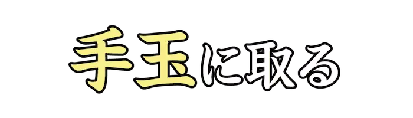 |
てだま |
思いのままに操り翻弄すること。 |
| Lv01_0271 |
|
おおぞら、たいくう |
広々とした空。また、仏語で、まったく何もないこと。 |
| Lv01_0272 |
|
つきみ |
主に満月を眺めて楽しむこと。『観月(かんげつ)』とも。 |
| Lv01_0273 |
 |
だいしゃ |
鉄道車両の車体を支えて走行する装置。 |
| Lv01_0274 |
|
ゆきおんな |
雪国の伝説で、雪の降る夜、白い衣を着た女の姿で現れるという雪の精。 |
| Lv01_0275 |
 |
ちい |
物の形や容積、面積が、狭い空間や場所しか占めていない。 |
| Lv01_0276 |
|
しんりん |
樹木、特に高木が群生して大きな面積を占めている所。 |
| Lv01_0277 |
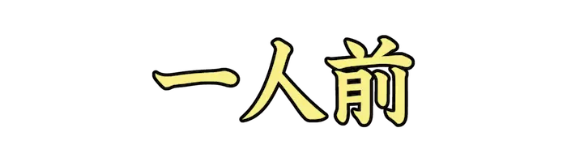 |
いちにんまえ |
一人に割り当てる量。ひとりぶん。技芸などが一応の水準に達していること。 |
| Lv01_0278 |
|
みずき |
水分を取り除くこと。また、小石を水面に水平方向に投げる遊戯。 |
| Lv01_0279 |
|
ただ |
形や向きがまっすぐである。道徳や法律、作法などにかなっている。 |
| Lv01_0280 |
|
う |
子が母親の胎内から出る。新しく作り出されて、世に出る。 |
| Lv01_0281 |
|
あお |
青色をしている。広く緑系統の色にもいう。 |
| Lv01_0282 |
|
ゆうひ、せきじつ |
夕方の太陽。また、その光。 |
| Lv01_0283 |
|
か |
非常に赤いこと。充血して赤いこと。 |
| Lv01_0284 |
|
かわべ |
川のほとり。川べり。川ばた。 |
| Lv01_0285 |
|
せんせい、せんじょう |
学問や技術、芸能を教える人。特に、学校の教師。 |
| Lv01_0286 |
|
くさ |
ネットスラング。笑えたり、面白いことを指す。 |
| Lv01_0287 |
|
はやあし |
歩き方の速いこと。速い足どりで歩くこと。 |
| Lv01_0288 |
|
いっきゅう |
<一休|いっきゅう><宗純|そうじゅん>。室町中期の<臨済宗|りんざいしゅう><僧|そう>。 |
| Lv01_0289 |
|
いえさだ |
江戸幕府の第十三代<征夷|せいい>大将軍。 |
| Lv01_0290 |
 |
みつなり |
安土桃山時代の武将、大名。 |
| Lv01_0291 |
|
つう |
他とつながる。また、道筋をつける。通ずる。 |
| Lv01_0292 |
|
まつだいら |
江戸時代中期の大名、老中。 |
| Lv01_0293 |
|
さかもと |
日本幕末の土佐藩士、志士、経営者。 |
| Lv01_0294 |
|
なかがわ |
戦国時代から安土桃山時代にかけての武将。 |
| Lv01_0295 |
|
なとり |
宮城県の中央南部に位置する市。仙台空港がある。 |
| Lv01_0296 |
|
おおおとこ |
体格が大きな男。 |
| Lv01_0297 |
|
たけ |
イネ科タケ亜科タケ類の地下茎から出る若芽の部分。 |
| Lv01_0298 |
|
なかお |
魚を三枚におろしたときの中骨の部分。また、そこについている肉。 |
| Lv01_0299 |
|
た |
田。水田。 |
| Lv01_0300 |
|
つち |
相撲で、力士が負ける。 |
| Lv01_0301 |
 |
すいどうばし |
東京都千代田区と文京区にある、東日本旅客鉄道、東京都交通局の駅。 |
| Lv01_0302 |
|
にんげん |
人類。また、ある特定の個人。 |
| Lv01_0303 |
|
けんがく |
実際のありさまを見て知識を広めること。 |
| Lv01_0304 |
|
たまごや |
鶏卵を溶き、食用油脂を引いた調理器具で焼いた、日本の料理。 |
| Lv01_0305 |
|
かせき |
地質時代の生物が死骸となって長く残っていたもの。また、その活動の痕跡。 |
| Lv01_0306 |
|
ひゃくえんだま |
日本国政府発行の貨幣。造幣局では年号のある面を裏としている。 |
| Lv01_0307 |
|
ちょうぶん |
長い文。長い文章。 |
| Lv01_0308 |
|
ほんね |
本心からいう言葉。また、本来の音色。本当の音色。 |
| Lv01_0309 |
|
なまえま |
名前が立派過ぎて、かえって実質が見劣りすること。 |
| Lv01_0310 |
|
あ、す |
閉じていたものがひらく。そこにあったものがなくなり、空になる。 |
| Lv01_0311 |
|
かいせい |
たいへん天気がよいこと。雲量1以下、視程1キロ以上の状態の天気。 |
| Lv01_0312 |
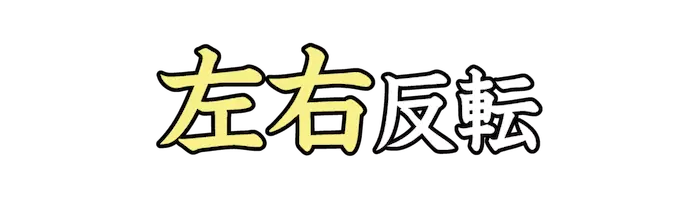 |
さゆう |
画像などの配置情報を左右に逆転すること。 |
| Lv01_0313 |
|
としだま |
新年を祝って贈る金品。主に子供や目下の者などに贈る。 |
| Lv01_0314 |
|
はなび |
火薬や発色剤などを筒や玉に詰め、破裂させその音や色彩を楽しむもの。 |
| Lv01_0315 |
|
た |
過不足なく必要なだけのものがある。十分である。 |
| Lv01_0316 |
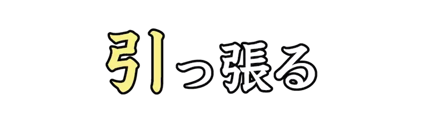 |
ひ |
引いて、ぴんと張る。また、自分の方へ引きよせる。 |
| Lv01_0317 |
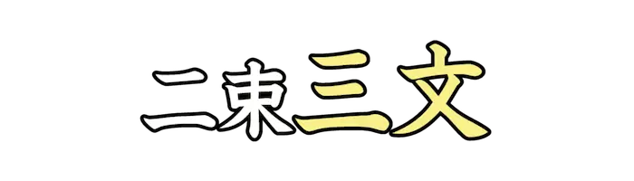 |
さんもん |
『二束三文(にそくさんもん)』。数量が多くても、値段がごく安いこと。 |
| Lv01_0318 |
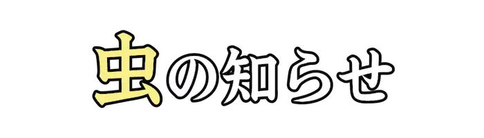 |
むし |
よくないことが起こりそうであると感じること。 |
| Lv01_0319 |
|
だ |
ある所の中から外部へ移す。おもてだったところに発表する。 |
| Lv01_0320 |
|
きん |
金製、または金メッキのメダル。 |
| Lv01_0321 |
|
はね |
束縛するものがなくなって、のびのびと自由に振る舞う。 |
| Lv01_0322 |
|
あまぐも |
雨や雪を降らせる雲。 |
| Lv01_0323 |
|
ある、あり |
足を動かして前に進む。歩行する。また、あちこち歩きまわる。出歩く。 |
| Lv01_0324 |
|
えんそく |
学校で、運動や見学を目的として、教師の引率で行う日帰りの小旅行。 |
| Lv01_0325 |
|
うた |
音楽的な高低、調子などをつけて発声する。 |
| Lv01_0326 |
|
たいかい、だいえ |
大規模な集まり。大きな会合。また、規模の大きい法会。大法会。 |
| Lv01_0327 |
|
しゅつじょう |
その場所に出ること。競技会などに参加すること。 |
| Lv01_0328 |
 |
ざかな |
魚に塩を振るなどして焼いたもの。 |
| Lv01_0329 |
 |
え |
絵に色をつけるための材料。 |
| Lv01_0330 |
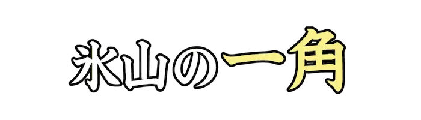 |
いっかく |
表面に現れているのは全体のほんの一部で、大部分は隠れたままであることのたとえ。 |
| Lv01_0331 |
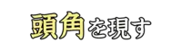 |
とうかく |
才能や腕前が群を抜いてすぐれ、際立って目立つこと。 |
| Lv01_0332 |
|
たの |
満ち足りていて、愉快な気持ちである。 |
| Lv01_0333 |
|
じかん |
ある時刻と他の時刻との間の長さ。ある長さをもつ時。 |
| Lv01_0334 |
|
まる |
円または球の形をしている。また、かどかどしくなく、穏やかである。 |
| Lv01_0335 |
|
がんせき |
地殻やマントル上部を構成する固体物質。 |
| Lv01_0336 |
|
かお |
交際範囲がひろく、知り合いが多いたとえ。 |
| Lv01_0337 |
|
きしゃ |
蒸気機関車で客車や貨車を引いて軌道を走る列車。 |
| Lv01_0338 |
 |
きにゅう |
所定の用紙などに書き入れること。 |
| Lv01_0339 |
|
ゆみ |
目上の人に反抗する。楯突く。 |
| Lv01_0340 |
|
ぎゅうにく |
食用とする牛の肉。 |
| Lv01_0341 |
|
とうきょう |
日本の関東地方に位置する首都。都庁所在地は新宿区。 |
| Lv01_0342 |
|
きょうりょく、ごうりき |
力や作用が強いこと。また、登山者の荷物を背負い道案内する人。 |
| Lv01_0343 |
 |
あにうえ |
兄を敬っていう語。 |
| Lv01_0344 |
|
よけい |
物が余っていること。必要な度を超えてむだなこと。 |
| Lv01_0345 |
|
げんき |
心身の活動の源となる力。 |
| Lv01_0346 |
|
ごご |
正午から日没までの時間。ひるすぎ。 |
| Lv01_0347 |
|
せんび |
線を引くこと。また、物事の境界を決めて分けること。 |
| Lv01_0348 |
|
たなばた、しちせき |
五節句のひとつ。七月七日に織姫と彦星をまつる行事。 |
| Lv01_0349 |
|
かんが |
知識や経験などに基づいて、筋道を立てて頭を働かせる。 |
| Lv01_0350 |
|
たか |
物が、地面などの基準になるところから、かなり上の位置にある。 |
| Lv01_0351 |
|
あいず |
身ぶりなどで知らせること。 |
| Lv01_0352 |
|
だいこくばしら |
家や国の中心となって、それを支える人。 |
| Lv01_0353 |
|
てんさい |
生まれつき備わっている、並み外れてすぐれた才能。 |
| Lv01_0354 |
|
たがや、たがえ |
作物を作るために、田畑の土を掘り返す。 |
| Lv01_0355 |
|
しがんへい |
志願制度において、自ら志願をした兵。 |
| Lv01_0356 |
|
かぞ |
順に数えたててうたう歌。多く頭韻を踏む。 |
| Lv01_0357 |
|
しちょう |
地方公共団体である市の長。市を代表し統轄する執行機関。 |
| Lv01_0358 |
|
てがみ |
用事などを記して、人に送る文書。書簡。書状。 |
| Lv01_0359 |
|
あしくび |
足のくるぶし。また、その上の少し細くなった部分。 |
| Lv01_0360 |
|
あきかぜ、しゅうふう |
秋に吹く風。秋になって吹いてくる涼しい風。 |
| Lv01_0361 |
 |
すこ |
数量、程度などがわずかであるさま。ちょっと。 |
| Lv01_0362 |
|
あたら |
その状態になってからあまり時間が経過していない。 |
| Lv01_0363 |
|
てんじ |
紙面に突起した点を一定の方式で組み合わせて表した表音文字。 |
| Lv01_0364 |
|
とうざい、ひたたし |
東と西。また、その方向。 |
| Lv01_0365 |
|
ほしがた |
星の輝きを図案化した形。 |
| Lv01_0366 |
|
はし |
足をすばやく動かして移動する。駆ける。 |
| Lv01_0367 |
|
いけ |
地表の窪んだ部分に水が溜まっている場所を意味する語。 |
| Lv01_0368 |
|
にほんとう |
日本固有の方法で作られた刀剣の総称。 |
| Lv01_0369 |
|
むぎ |
イネ目イネ科の一年草。寒冷な気候や痩せた土壌などの劣悪な環境に耐性がある。 |
| Lv01_0370 |
|
ふうしゃ、かざぐるま |
風を受けて回転する羽根車。また、紙などで作った回転するおもちゃ。 |
| Lv01_0371 |
|
でんき |
摩擦電気や放電、電流などの現象。また、その主体の電荷や電気エネルギー。 |
| Lv01_0372 |
|
かみなりもん |
浅草寺の総門である風雷神門の通称。 |
| Lv01_0373 |
|
うおざ |
黄道十二星座のひとつ。現在、春分点がある所。 |
| Lv01_0374 |
|
はんぶん |
二分の一の分量、数量。 |
| Lv01_0375 |
|
こた、いら |
相手からかけられた言葉に対して返事をする。 |
| Lv01_0376 |
|
ことり |
ウグイス、スズメ、ヒバリなどの形の小さい鳥。 |
| Lv01_0377 |
|
あさがた |
朝のうち。朝のあいだ。早朝のころ。 |
| Lv01_0378 |
|
とうじつ |
その日。そのことがある日、またあった日。 |
| Lv01_0379 |
|
ほどうきょう |
歩行者の道路横断用に設けた橋。 |
| Lv01_0380 |
|
にもつ |
運搬、運送する品物。 |
| Lv01_0381 |
|
いしゃ |
病人の診察、治療を職業とする人。 |
| Lv01_0382 |
|
ちく |
ある限られた範囲内の土地。地域。 |
| Lv01_0383 |
|
やきゅうじょう |
野球の試合を行うためのグラウンド。球場。 |
| Lv01_0384 |
|
だいこん |
アブラナ科ダイコン属の越年草。肥大した根を食用とする。 |
| Lv01_0385 |
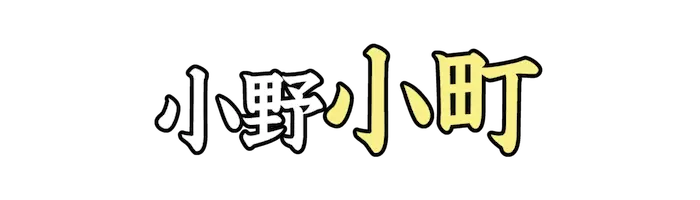 |
こまち |
平安時代前期九世紀頃の女流歌人。 |
| Lv01_0386 |
|
いとしま |
福岡県の最西部に位置する市。北側と西端部は玄界灘に面する。 |
| Lv01_0387 |
|
いわで |
和歌山県北部に位置する市。官公庁施設を有す、那賀地域の中心都市。 |
| Lv01_0388 |
|
しっしょう |
笑ってはいけない場面などで、思わず吹き出して笑ってしまうこと。 |
| Lv01_0389 |
|
ゆうがい |
害があること。また、そのさま。 |
| Lv01_0390 |
|
ぎょぎょう |
魚介類の捕獲、採取や養殖などを行う産業。 |
| Lv01_0391 |
|
たと |
前に述べた事柄に対して、具体的な例をあげて説明するときに用いる語。 |
| Lv01_0392 |
|
きょくりょく |
力の限りを尽くすさま。できる限り。 |
| Lv01_0393 |
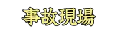 |
じこげんば |
事故が発生したその場所。 |
| Lv01_0394 |
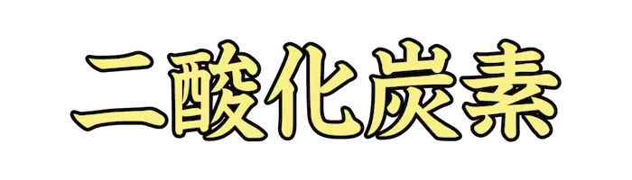 |
にさんかたんそ |
炭素の酸化物の一つ。 |
| Lv01_0395 |
|
さいてきかい |
最も適した答え。現状から最適と考えられる解答。 |
| Lv01_0396 |
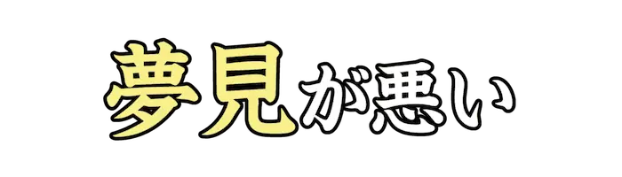 |
ゆめみ |
夢の内容が良くないこと。 |
| Lv01_0397 |
|
ぞくへん |
書物や論文、映画などの正編や前編などに続く編。 |
| Lv01_0398 |
|
ぬのき |
布の切れ端。 |
| Lv01_0399 |
|
ふうふ、めおと |
夫と妻。めおと。 |
| Lv01_0400 |
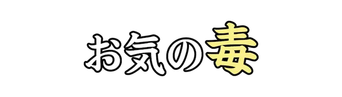 |
どく |
他人の不幸や不運に心が痛むこと。 |
| Lv01_0401 |
|
いってんば |
賭け事で同じ所だけに金銭をかけること。また、その事だけを片意地に押し通すこと。 |
| Lv01_0402 |
|
あめあ、あまあ |
雨がやんだすぐあと。 |
| Lv01_0403 |
|
うんかい |
飛行機や高山などの高所から見下ろすと、雲が一面に広がり海のように見えること。 |
| Lv01_0404 |
|
えいじゅう |
外国人が、在留期間を制限されることなく滞在国に永住できる権利。 |
| Lv01_0405 |
|
ひらおよ |
両腕両足を左右に開いて進む泳法。ブレストストロークとも。 |
| Lv01_0406 |
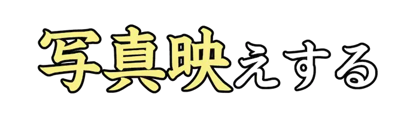 |
しゃしんば |
写真に撮ったとき、見応えや見た目の良さが際立つといった意味で用いられる言い回し。 |
| Lv01_0407 |
|
むしば |
歯の硬組織が細菌によっておかされた歯。 |
| Lv01_0408 |
|
いちえんだま |
日本政府が発行する貨幣のひとつ。一円アルミニウム貨幣の通称。 |
| Lv01_0409 |
|
じょうげ、じょうか |
上と下。また、上級と下級。 |
| Lv01_0410 |
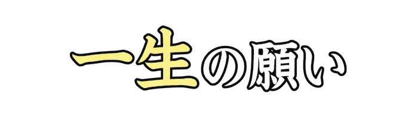 |
いっしょう |
生きている間に一度しかしないような、重要な願い。一生のお願い。 |
| Lv01_0411 |
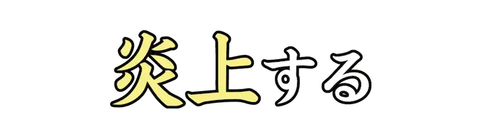 |
えんじょう |
火が燃え上がること。また、ネット用語で特定の対象に、批判や非難が殺到する状態。 |
| Lv01_0412 |
 |
にじげん |
次元の数が二つある平面上の空間のこと。転じて、アニメや漫画、ゲームを指す。 |
| Lv01_0413 |
|
ぜい |
ある物事に全力で取り組んでいる人々を意味するスラング。 |
| Lv01_0414 |
|
くろれきし |
今では恥ずかしい、なかったことにしたい過去などを意味する表現。 |
| Lv01_0415 |
|
ざんとう |
スラングで『残念だが当然』を略した語。 |
| Lv01_0416 |
|
しおたいおう |
そっけない、愛想のない、冷淡な接し方を指す言い方。 |
| Lv01_0417 |
|
じょうきょう |
スラングで『情報強者』を略した語。 |
| Lv01_0418 |
|
まんじ |
善し悪しを問わず、何らかの点で気分が非常に高ぶっているさまを表す若者言葉。 |
| Lv01_0419 |
|
むねあつ |
『胸が熱くなる』を略した語。感動してじいんとするさまを表す言い回し。 |
| Lv01_0420 |
|
めし |
俗に、料理の写真などを見せびらかして第三者の食欲を刺激して苛ませる行為。 |
| Lv01_0421 |
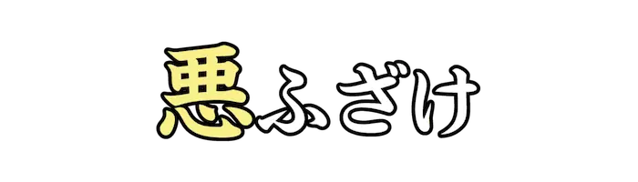 |
わる |
度を過ぎてふざけること。たちの悪い冗談やいたずら。わるじゃれ。 |
| Lv01_0422 |
|
くうはく |
書類などの書き込むべきところに、何も書いてないこと。また、その部分。 |
| Lv01_0423 |
|
ふせい |
コンピューターシステムを不正に利用する、もしくは利用を試みること。 |
| Lv01_0424 |
|
あぶら |
ただでさえ危ないものに勢いをつけ、事態を悪化させることのたとえ。 |
| Lv01_0425 |
|
じどう |
硬貨や紙幣、カードを差し入れると、自動で目的の物品やサービスが得られる機械。 |
| Lv01_0426 |
|
はいしん |
インターネット上で、撮影している映像を即時に配信すること。 |
| Lv01_0427 |
|
じたん |
『<時間短縮|じかんたんしゅく>』の略。労働時間の短縮。また、作業時間の短縮。 |
| Lv01_0428 |
|
かね |
時間は貴重であり有効なものであるから、むだに費やしてはいけないことのたとえ。 |
| Lv01_0429 |
|
いもうと |
きょうだいのうち、年下の女性。 |
| Lv01_0430 |
|
しじゅう |
事の始めから終わりまで。物事のくわしい事情。また、事のなりゆき。 |
| Lv01_0431 |
|
めだ |
とりわけ人目をひく。きわだって見える。 |
| Lv01_0432 |
|
あつ |
気温が高い。 |
| Lv01_0433 |
|
しょきゅう |
能力や技能など、上達していくものの、いちばん初めの等級。 |
| Lv01_0434 |
|
がぞう |
絵にかいた肖像。えすがた。肖像画。また、カメラなどで扱われる画像データ。 |
| Lv01_0435 |
|
おとな |
成長して一人前になった人。一人前の年齢に達した人。 |
| Lv01_0436 |
|
じんせい |
人がこの世で生きていくこと。また、人がこの世に生きている間。 |
| Lv01_0437 |
|
むりょう |
料金を払わなくてよいこと。 |
| Lv01_0438 |
|
かたな |
武器として使った、片刃の刃物。 |
| Lv01_0439 |
|
ねんだい |
経過してきた年月。時の流れをあるまとまりで区切った期間。 |
| Lv01_0440 |
|
ぶんか |
複数名により構成される社会の中で、共有される考え方や価値基準の体系。 |
| Lv01_0441 |
|
だいば |
東京都港区の地名。また、江戸幕府が江戸品川沖に築いた砲台。 |
| Lv01_0442 |
|
はんめん |
悪い見本として反省や戒めの材料となる物事。 |
| Lv01_0443 |
|
ぶんぶ |
文事と武事との両方。また、勉学とスポーツの両面。 |
| Lv01_0444 |
|
むじつ |
名ばかりで、それに伴う実質のないこと。 |
| Lv01_0445 |
|
どうどう |
態度や手段が正しくりっぱなさま。 |
| Lv01_0446 |
|
じゆうじざい |
思いのままにするさま。 |
| Lv01_0447 |
|
くうぜん |
過去にも例がなく、将来もありえないと思われること。 |
| Lv01_0448 |
|
しくはっく |
非常に苦労、苦悩すること。また、仏語で、人間のあらゆる苦しみ。 |
| Lv01_0449 |
|
じもんじとう |
自分で問いかけ、自分で答えること。 |
| Lv01_0450 |
|
びじん |
だれに対しても如才なく振る舞うこと。非難の気持ちを込めて用いることが多い。 |
{kind=link}
{kind=link}
{kind=link}
{kind=link}

{kind=link}
{kind=link}
{kind=link}
{kind=link}
{kind=link}
{kind=link}
{kind=link}
{kind=link}
{kind=link}
{kind=link}
{kind=link}
{kind=link}
{kind=link}
{kind=link}
{kind=link}
{kind=link}
{kind=link}
{kind=link}
{kind=link}
{kind=link}
{kind=link}
{kind=link}
{kind=link}
{kind=link}
{kind=link}
{kind=link}
{kind=link}
{kind=link}
{kind=link}
{kind=link}
{kind=link}
{kind=link}
{kind=link}
{kind=link}
{kind=link}
{kind=link}
{kind=link}
{kind=link}
{kind=link}
{kind=link}
{kind=link}
{kind=link}
{kind=link}
{kind=link}
{kind=link}
{kind=link}
{kind=link}
{kind=link}
{kind=link}
{kind=link}
{kind=link}
{kind=link}
{kind=link}
{kind=link}
{kind=link}
{kind=link}
{kind=link}
{kind=link}
{kind=link}
{kind=link}
{kind=link}
{kind=link}
{kind=link}
{kind=link}
{kind=link}
{kind=link}
{kind=link}
{kind=link}
{kind=link}
{kind=link}
{kind=link}
{kind=link}
{kind=link}
{kind=link}
{kind=link}
{kind=link}
{kind=link}
{kind=link}
{kind=link}
{kind=link}
{kind=link}
{kind=link}
{kind=link}
{kind=link}
{kind=link}
{kind=link}
{kind=link}
{kind=link}
{kind=link}
{kind=link}
{kind=link}

{kind=link}
{kind=link}
{kind=link}
{kind=link}
{kind=link}
{kind=link}
{kind=link}
{kind=link}
{kind=link}
{kind=link}
{kind=link}
{kind=link}
{kind=link}

{kind=link}
{kind=link}
{kind=link}
{kind=link}
{kind=link}
{kind=link}
{kind=link}
{kind=link}
{kind=link}
{kind=link}
{kind=link}
{kind=link}
{kind=link}
{kind=link}
{kind=link}
{kind=link}
{kind=link}
{kind=link}

{kind=link}

{kind=link}
{kind=link}
{kind=link}
{kind=link}
{kind=link}
{kind=link}
{kind=link}

{kind=link}
{kind=link}
{kind=link}
{kind=link}
{kind=link}
{kind=link}
{kind=link}
{kind=link}
{kind=link}
{kind=link}
{kind=link}
{kind=link}
{kind=link}
{kind=link}
{kind=link}
{kind=link}
{kind=link}
{kind=link}
{kind=link}
{kind=link}
{kind=link}
{kind=link}
{kind=link}
{kind=link}
{kind=link}
{kind=link}
{kind=link}
{kind=link}
{kind=link}
{kind=link}
{kind=link}
{kind=link}
{kind=link}
{kind=link}
{kind=link}
{kind=link}
{kind=link}
{kind=link}
{kind=link}
{kind=link}
{kind=link}
{kind=link}
{kind=link}
{kind=link}
{kind=link}

{kind=link}
{kind=link}
{kind=link}
{kind=link}
{kind=link}
{kind=link}
{kind=link}
{kind=link}
{kind=link}
{kind=link}
{kind=link}
{kind=link}
{kind=link}
{kind=link}
{kind=link}
{kind=link}
{kind=link}
{kind=link}
{kind=link}
{kind=link}
{kind=link}
{kind=link}
{kind=link}
{kind=link}

{kind=link}
{kind=link}
{kind=link}
{kind=link}
{kind=link}
{kind=link}
{kind=link}
{kind=link}
{kind=link}
{kind=link}
{kind=link}
{kind=link}
{kind=link}
{kind=link}
{kind=link}
{kind=link}
{kind=link}
{kind=link}

{kind=link}

{kind=link}
{kind=link}
{kind=link}
{kind=link}
{kind=link}
{kind=link}
{kind=link}
{kind=link}
{kind=link}
{kind=link}
{kind=link}
{kind=link}
{kind=link}

{kind=link}
{kind=link}
{kind=link}
{kind=link}
{kind=link}
{kind=link}
{kind=link}
{kind=link}
{kind=link}
{kind=link}
{kind=link}
{kind=link}
{kind=link}
{kind=link}

{kind=link}
{kind=link}
{kind=link}
{kind=link}
{kind=link}
{kind=link}
{kind=link}
{kind=link}
{kind=link}
{kind=link}
{kind=link}

{kind=link}

{kind=link}
{kind=link}
{kind=link}
{kind=link}
{kind=link}
{kind=link}
{kind=link}
{kind=link}
{kind=link}
{kind=link}
{kind=link}
{kind=link}
{kind=link}
{kind=link}

{kind=link}
{kind=link}
{kind=link}
{kind=link}
{kind=link}
{kind=link}
{kind=link}
{kind=link}
{kind=link}
{kind=link}

{kind=link}
{kind=link}
{kind=link}
{kind=link}
{kind=link}
{kind=link}
{kind=link}
{kind=link}
{kind=link}
{kind=link}
{kind=link}
{kind=link}
{kind=link}
{kind=link}
{kind=link}
{kind=link}
{kind=link}
{kind=link}
{kind=link}
{kind=link}
{kind=link}
{kind=link}
{kind=link}
{kind=link}
{kind=link}
{kind=link}


{kind=link}
{kind=link}
{kind=link}
{kind=link}
{kind=link}
{kind=link}
{kind=link}
{kind=link}

{kind=link}
{kind=link}
{kind=link}
{kind=link}

{kind=link}
{kind=link}
{kind=link}
{kind=link}
{kind=link}
{kind=link}
{kind=link}
{kind=link}
{kind=link}
{kind=link}
{kind=link}
{kind=link}
{kind=link}
{kind=link}
{kind=link}
{kind=link}
{kind=link}

{kind=link}
{kind=link}
{kind=link}
{kind=link}
{kind=link}
{kind=link}
{kind=link}
{kind=link}
{kind=link}
{kind=link}
{kind=link}
{kind=link}
{kind=link}
{kind=link}
{kind=link}
{kind=link}
{kind=link}
{kind=link}
{kind=link}
{kind=link}
{kind=link}
{kind=link}
{kind=link}
{kind=link}
{kind=link}
{kind=link}
{kind=link}
{kind=link}
{kind=link}
{kind=link}
{kind=link}
{kind=link}
{kind=link}
{kind=link}
{kind=link}
{kind=link}
{kind=link}
{kind=link}
{kind=link}
{kind=link}
{kind=link}
{kind=link}
{kind=link}
{kind=link}
{kind=link}
{kind=link}
{kind=link}
{kind=link}
{kind=link}
{kind=link}

{kind=link}
{kind=link}
{kind=link}
{kind=link}
{kind=link}
{kind=link}
{kind=link}
{kind=link}
{kind=link}
{kind=link}
{kind=link}
{kind=link}
{kind=link}
{kind=link}
{kind=link}
{kind=link}
{kind=link}
{kind=link}
{kind=link}
{kind=link}
{kind=link}
{kind=link}
{kind=link}
{kind=link}
{kind=link}
{kind=link}
{kind=link}
{kind=link}
{kind=link}
{kind=link}
{kind=link}
{kind=link}
{kind=link}
{kind=link}
{kind=link}
{kind=link}
{kind=link}
{kind=link}